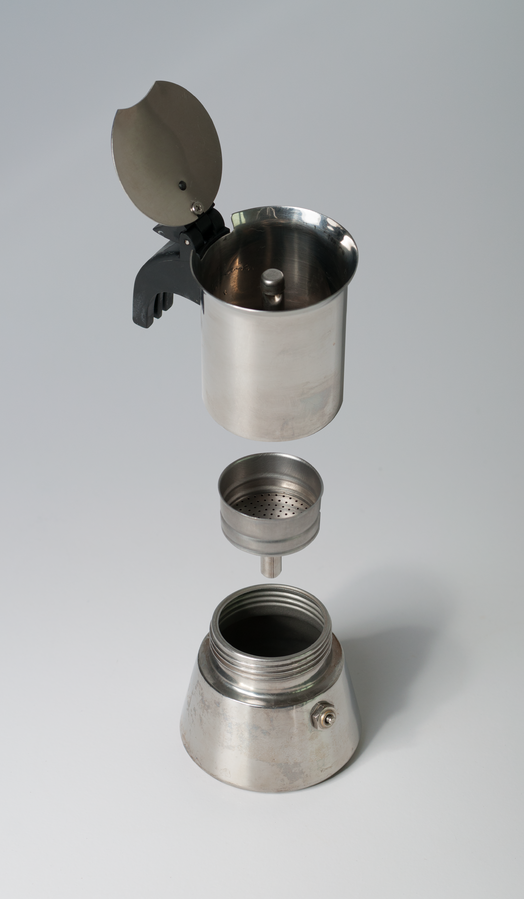

Moka Pots are a quick and easy way to enjoy coffee. Following the instructions below will help you learn how easy it is to brew coffee using a Moka Pot.
| Instructions Overview | Necessary Equipment |
|---|---|
| Fill Moka Base with Water | A Moka Pot |
| Fill Funnel with Ground Coffee | Boiling Water |
| Cook Until Bubbling | Ground Coffee Beans |
| Pour and Enjoy | A Constant Heat Source |

Using pre-boiled water reduces cooking time and may produce a less bitter cup of coffee.
Use finely ground coffee beans -- the same grind size used for espresso.
Place the Moka Pot on a stove-top heated to medium-high. Remove the Moka Pot from the stove-top once it begins to produce a gurgling or bubbling sound.
Click the button bellow to hear what a Moka Pot sounds like when it finishes brewing.
If pouring mulitple cups, stir the coffee inside the Moka Pot before pouring. This mixes the lighter and heavier parts of the coffee together ensuring a more even taste between cups.